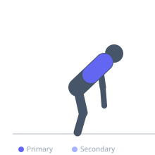
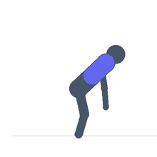

Exercise guide / Prone YTW-L on Floor
Prone YTW-L on Floor
A prone floor exercise that works through four arm positions — Y, T, W, and L — each targeting a different aspect of scapular and rotator cuff function. The Y position challenges lower trapezius and serratus; T challenges middle trapezius and posterior deltoid; W challenges the external rotators and rhomboids; L challenges the external rotators in a bent-elbow position. Performed as a continuous complex, this exercise is a staple of shoulder rehabilitation and postural correction programs.
Primary muscles
trapezius lower
trapezius middle
infraspinatus
Secondary muscles
teres minor
rhomboid major
deltoid posterior
Equipment
No Equipment (Bodyweight)


Starting position
- Lie face down on the floor with arms by the sides and forehead resting on the floor. Lift the chest slightly to establish a neutral spine position.
Setup
- No equipment needed. A thin mat is recommended for comfort. Light dumbbells (0.5–2 kg) can be added when bodyweight becomes insufficient.
Steps
- Step 1 (Y): Raise both arms overhead at a 45-degree angle from the body, thumbs pointing upward. Hold 2 seconds, lower.
- Step 2 (T): Raise both arms straight out to the sides at 90 degrees, thumbs pointing upward. Hold 2 seconds, lower.
- Step 3 (W): Bend elbows to 90 degrees with upper arms out to sides. Raise the arms by externally rotating at the shoulder. Hold 2 seconds, lower.
- Step 4 (L): With elbows at 90 degrees and bent close to the body, externally rotate both arms so the forearms point forward parallel to the floor. Hold 2 seconds, lower.
Coaching cues
- Think about pinching the shoulder blades toward the spine for T and W
- For Y, reach as long as possible through the fingertips
- For L, keep the elbows tucked and close to the torso
Breathing
- Exhale during each lift. Inhale as you lower. Breathe normally between positions.
Range of motion
- Lift to the point where you feel the target muscles working without compensating with the lower back or neck.
Tempo
- 2s lift, 2s hold, 2s lower for each position. Complete all four before resting.
Common mistakes
- Lifting from the neck or shrugging the shoulders during the Y position
- Hyperextending the lower back instead of using the scapular muscles
- Using momentum — each position should be held with controlled muscle activation
Safety
- If any position causes shoulder pain, omit that portion and consult a physiotherapist
- Start without resistance — the positions themselves are challenging enough for most beginners
Training
- endurance: 8–15 reps
- mobility: 5–10 reps
- endurance: 2–3 sets
- mobility: 2–3 sets
- Rest: {'endurance': 60, 'mobility': 60}